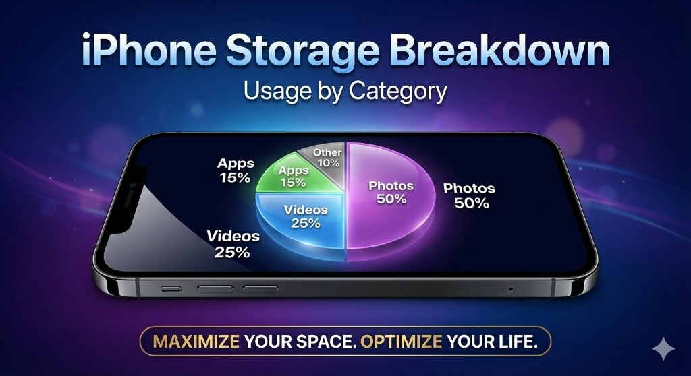

Running out of storage on your iPhone? You're not alone. With higher-resolution photos, 4K videos, and ever-growing apps, iPhone storage fills up faster than ever. The good news is that you can typically free up 5-20GB of space in just minutes using the right methods.
Key Takeaway
The fastest way to free up iPhone storage is to delete duplicate photos, compress large videos, and clear app caches. These three actions alone can recover 10GB+ for most users.

Quick Answer: How to Free Up iPhone Storage
If you're in a hurry, here are the most effective methods ranked by impact:
- Delete duplicate and similar photos — Saves 2-8GB for most users
- Compress videos — Can reduce video storage by 50-80%
- Remove screenshots and junk images — Often 1-3GB of forgotten clutter
- Offload unused apps — Instant space without losing data
- Clear Safari and app caches — Recovers 1-5GB
1. Delete Duplicate and Similar Photos
Duplicate photos are the #1 hidden storage waster on most iPhones. These accumulate from:
- Saving the same photo multiple times
- Burst mode shots you forgot to clean up
- WhatsApp and messaging app auto-saves
- Screenshots of the same thing
- Edited versions alongside originals
How to find duplicates: iOS 16+ includes a "Duplicates" album in the Photos app. However, it only catches exact matches. For similar photos (like 10 shots of the same sunset), you'll need a dedicated cleaner app.
Clean duplicates automatically
Fast Cleaner finds both exact duplicates and similar photos using AI.
2. Compress Large Videos
A single 1-minute 4K video can take up 400MB of storage. If you have dozens of videos, they could be consuming 20GB+ of your iPhone's space.
The solution: Compress videos to reduce their file size while maintaining visual quality. Modern compression can shrink videos by 50-80% with minimal visible difference.
Pro Tip
Before compressing, check Settings > Camera > Record Video. Switching from 4K to 1080p for everyday videos saves significant space going forward.
3. Remove Screenshots and Screen Recordings
Screenshots pile up quickly — receipts, funny tweets, temporary information. Most people have hundreds of screenshots they no longer need.
Quick cleanup method:
- Open Photos → Albums → Screenshots
- Select all (tap "Select" then drag across)
- Review quickly and delete what you don't need
Screen recordings are even bigger storage hogs. A 2-minute screen recording can easily be 100MB+.
4. Check What's Using Your Storage
Before cleaning, understand where your storage is going:
- Go to Settings → General → iPhone Storage
- Wait for the bar graph to load completely
- Review the breakdown by category and app
Common storage hogs include:
- Photos: Usually the biggest (40-60% of storage)
- Messages: Old conversations with photos/videos
- Music/Podcasts: Downloaded media
- Social apps: Instagram, TikTok, Snapchat caches
5. Offload Unused Apps
Offloading removes the app but keeps its data. When you reinstall, everything is restored.
To offload manually:
- Go to Settings → General → iPhone Storage
- Tap an app you rarely use
- Tap "Offload App"
To enable automatic offloading:
- Go to Settings → App Store
- Enable "Offload Unused Apps"
6. Clear Safari Cache and Data
Safari stores website data, history, and cached files that can grow to several gigabytes over time.
To clear Safari data:
- Go to Settings → Safari
- Tap "Clear History and Website Data"
- Confirm the action
Note
This will sign you out of websites and clear your browsing history. You'll need to log in again to your favorite sites.
7. Delete Old Messages and Attachments
Years of messages with photos, videos, and attachments can consume massive amounts of storage.
To auto-delete old messages:
- Go to Settings → Messages
- Under "Message History," tap "Keep Messages"
- Select "1 Year" or "30 Days" instead of "Forever"
To delete large attachments:
- Go to Settings → General → iPhone Storage
- Tap "Messages" then "Review Large Attachments"
- Delete videos and photos you no longer need
8. Remove Downloaded Music and Podcasts
Offline music and podcast episodes take up significant space. Review and remove what you've already listened to.
For Apple Music:
- Go to Settings → Music → Downloaded Music
- Swipe left on artists/albums to delete
For Podcasts:
- Open the Podcasts app
- Go to Library → Downloaded
- Delete episodes you've finished
9. Use iCloud Photos (Optimize Storage)
iCloud Photos can keep full-resolution photos in the cloud while storing smaller versions on your device.
To enable:
- Go to Settings → Photos
- Enable "iCloud Photos"
- Select "Optimize iPhone Storage"
This works best with a paid iCloud plan (50GB, 200GB, or 2TB).
10. Delete and Reinstall Storage-Heavy Apps
Some apps accumulate huge caches that can't be cleared otherwise. Common culprits:
- TikTok
- Spotify
- Netflix
- YouTube
Deleting and reinstalling these apps gives you a fresh start with minimal cache.
Frequently Asked Questions
How do I free up storage on my iPhone quickly?
The fastest method is to delete duplicate photos and compress videos. These two actions alone can free up 5-15GB in minutes. Use Fast Cleaner to automate the process — it scans your library and lets you clean duplicates and compress videos with a few taps.
What is "System Data" on iPhone and can I clear it?
System Data (formerly "Other") includes caches, logs, and temporary files. You can reduce it by clearing Safari data, offloading apps, and restarting your iPhone. A backup and restore will clear most System Data, but this is time-consuming.
Why is my iPhone storage full when I have iCloud?
iCloud and iPhone storage are separate. Even with iCloud Photos, your device keeps optimized versions of photos locally. Enable "Optimize iPhone Storage" in Settings → Photos to minimize local storage usage.
Is it safe to delete duplicate photos?
Yes, deleted photos go to "Recently Deleted" in the Photos app where they stay for 30 days. You can recover any accidentally deleted photos during this period. Apps like Fast Cleaner also show you photos before deletion so you stay in control.
Summary
Freeing up iPhone storage doesn't have to be complicated. Focus on the biggest wins first:
- Delete duplicate and similar photos
- Compress large videos
- Clear screenshots and old message attachments
- Offload apps you rarely use
For the fastest results, use a dedicated cleaner app that can automate these tasks and find hidden storage wasters that are easy to miss manually.
Ready to clean up your iPhone?
Fast Cleaner helps you reclaim storage in minutes with AI-powered duplicate detection and smart compression.